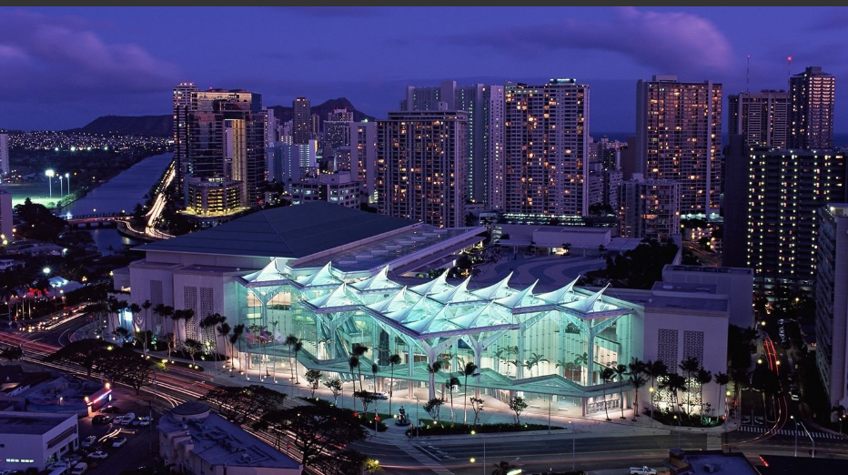
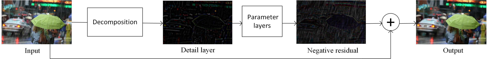

2017年7月21日至7月26日，在美丽的海岛城市夏威夷州火奴鲁鲁，将举行2017年CVPR会议（Conference on Computer Vision and Pattern Recognition）。而在本次会议，我实验室2014级傅雪阳博士的论文“Removing Rain from Single Images via a Deep Detail Network”获得审阅人及评委的一致认可，被IEEE CVPR接收！就在去年的2016CVPR会议上，傅雪阳博士的论文 "A weighted variational model for simultaneous reflectance and illumination estimation"就已经被该会议接收。不到半年的时间，傅雪阳博士再一次受到了CVPR的肯定。

国际计算机视觉与模式识别会议（CVPR）是IEEE一年一度的学术性会议，会议的主要内容是计算机视觉与模式识别技术。CVPR是世界顶级的计算机视觉会议（三大顶会之一，另外两个是ICCV和ECCV），近年来每年有约1500名参加者，收录的论文数量一般300篇左右。本会议每年都会有固定的研讨主题，而每一年都会有公司赞助该会议并获得在会场展示的机会。CVPR有着较为严苛的录用标准，会议整体的录取率通常不超过30%，而口头报告的论文比例更是不高于5%。在各种学术会议统计中，CVPR被认为有着很强的影响力和很高的排名。目前在中国计算机学会推荐国际学术会议的排名中，CVPR为人工智能领域的A类会议
户外视觉系统越来越广泛地应用于军事、交通及安全监控等领域,但是恶劣天气严重影响了系统的性能,而下雨是最频繁的恶劣天气之一,会严重损害视频图像的质量,因此检测和去除视频图像中的雨滴对于一个全天候的户外视觉系统来说是必不可少的。去雨技术不仅可以恢复被雨滴影响的视频图像,而且有利于对视频图像的进一步处理,包括基于视频图像的目标检测、识别、追踪、分割和监控等技术的性能提高。傅雪阳博士这篇论文中提出一个新的端到端深度网络体系，基于深度卷积网络进行有雨与无雨图片的学习，最终达到去除单帧图片中雨条纹的目的。实验结果表明,该方法不论是在合成图像还是真实图像上都明显优于最先进的方法。

在傅雪阳博士进行实验的整个阶段，2015级研究生黄佳斌与凌梅为傅雪阳博士做了大量的实验，提供了许多帮助。同时，在模型训练阶段，他们也提供了大量的数据准备。
论文下载：Removing Rain from Single Images via a Deep Detail Network